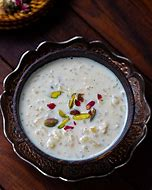

Easy kheer recipe for Indian rice pudding. It's so full of flavor and very easy to make — it's the best rice pudding I've ever had!
Bring coconut milk, milk, and sugar to a boil in a large saucepan over medium heat. Add rice, reduce the heat to low, and simmer until mixture thickens and rice is tender, about 20 minutes.
Stir in raisins, cardamom, and rose water; cook for a few more minutes. Ladle into serving bowls and garnish with almonds and pistachios